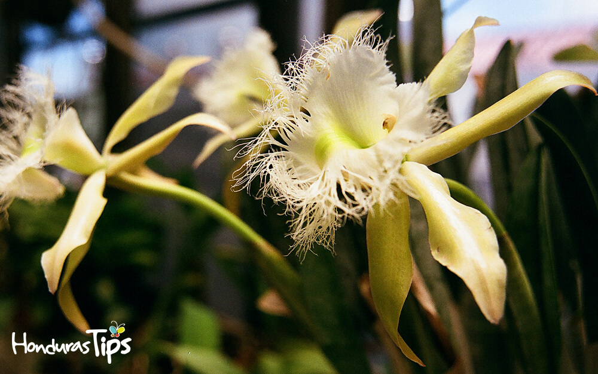
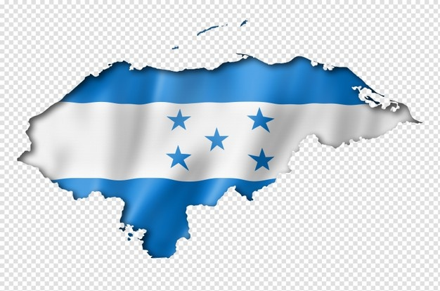
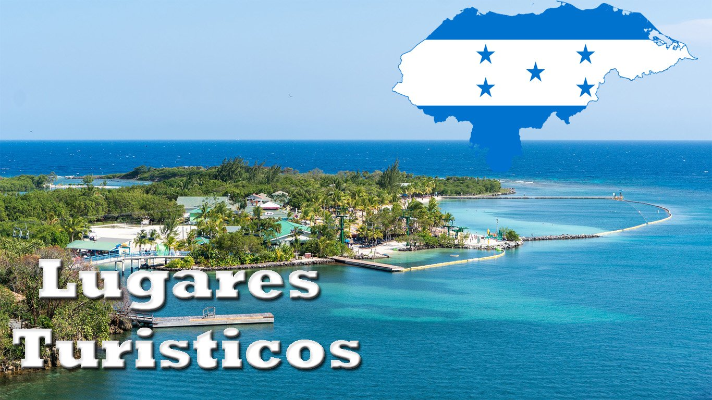
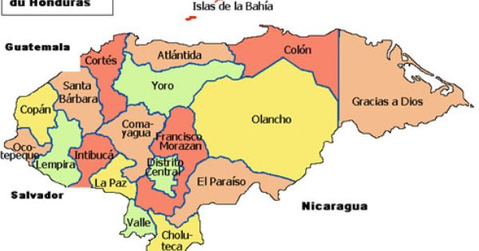

Simbolos patrios

Bandera
Las franjas azules representan el cielo hondureño, los océanos Atlántico y Pacifico que bañan las costas del territorio nacional. Además simboliza la justicia, la lealtad, la fraternidad, la fortaleza, la dulzura, el valor, el amor fraternal y los generosos ideales que unen a los hondureños.
Las cinco estrellas azules simbolizan los cinco países que formaron la antigua Federación Centroamericana y el ideal de la unión de Centroamérica.
La franja blanca significa la pureza, la integridad, la fe, la obediencia, la paz, la firmeza, la vigilancia, la bondad y la nación.

Escudo
Un triángulo equilátero colocado en un terreno que bañan dos mares. En la base del triángulo, un volcán entre dos castillos, sobre los cuales se levanta el arco iris.

Flor nacional
La Rhyncholaelia digbyana, es una especie epífita. Está muy próxima a Cattleya, con las que solo tienen de diferencia el número de polinia que en esta especie es de 12 que son desiguales. Los tallos son normalmente cortos.

Árbol nacional
El Pino fue elegido por el gobierno del entonces presidente Miguel Paz Barahona, quién mediante acuerdo No. 429 emitido el 14 de Mayo de 1928 resolvió declarar el Pino como Árbol Nacional de Honduras. Su elección como representante de la flora nacional esta basada en el hecho que el Pino es el árbol que de manera natural predomina en los bosques hondureños.

Animal nacional
La Guara Roja o Guacamaya Roja fue declarada Ave Nacional de Honduras el 28 de Junio de 1993 por el Congreso Nacional de Honduras, como medida para preservar la fauna y la diversidad biológica con la que cuenta Honduras. Ese mismo día se nombró al Venado Cola Blanca como Mamífero Nacional de Honduras
Historia
El territorio que corresponde a la actual Honduras fue hogar de la civilización maya durante el primer milenio de nuestra era, como lo testimonian las ruinas de Copán. Fue invadido después por los Aztecas y a continuación por los Mosquitos.
En 1502, la región fue descubierta por Cristóbal Colón. La población indígena fue entonces diezmada por la conquista española y por las enfermedades que trajeron los colonos. Sin embargo, muy pronto los pueblos se mezclaron y los mestizos llegaron a ser el grupo étnico dominante de Honduras.

Extención territorial
112.492 km²

Lugares turisticos de Honduras
- Islas de la Bahía
- Telá
- Los Cayos Cochinos
- La Ceiba
- Ruinas de Copán
Lista de departamentos
